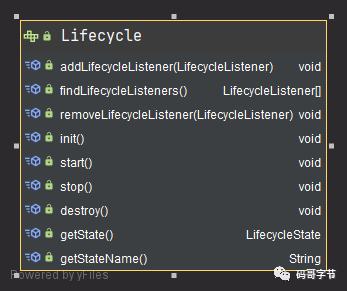

Tomcat 架构原理解析到架构设计借鉴
Tomcat 发展这么多年，已经比较成熟稳定。在如今『追新求快』的时代，Tomcat 作为 Java Web 开发必备的工具似乎变成了『熟悉的陌生人』，难道说如今就没有必要深入学习它了么？学习它我们又有什么收获呢？
静下心来，细细品味经典的开源作品 。提升我们的「内功」，具体来说就是学习大牛们如何设计、架构一个中间件系统，并且让这些经验为我所用。
美好的事物往往是整洁而优雅的。但这并不等于简单，而是要将复杂的系统分解成一个个小模块，并且各个模块的职责划分也要清晰合理。
与此相反的是凌乱无序，比如你看到城中村一堆互相纠缠在一起的电线，可能会感到不适。维护的代码一个类几千行、一个方法好几百行。方法之间相互耦合糅杂在一起，你可能会说 what the f*k！
{kind=link}
img
学习目的
掌握 Tomcat 架构设计与原理提高内功
宏观上看
Tomcat 作为一个 「Http 服务器 + Servlet 容器」，对我们屏蔽了应用层协议和网络通信细节，给我们的是标准的 Request 和 Response 对象；对于具体的业务逻辑则作为变化点，交给我们来实现。我们使用了SpringMVC 之类的框架，可是却从来不需要考虑 TCP 连接、 Http 协议的数据处理与响应。就是因为 Tomcat 已经为我们做好了这些，我们只需要关注每个请求的具体业务逻辑。
微观上看
Tomcat 内部也隔离了变化点与不变点，使用了组件化设计，目的就是为了实现「俄罗斯套娃式」的高度定制化（组合模式），而每个组件的生命周期管理又有一些共性的东西，则被提取出来成为接口和抽象类，让具体子类实现变化点，也就是模板方法设计模式。
当今流行的微服务也是这个思路，按照功能将单体应用拆成「微服务」，拆分过程要将共性提取出来，而这些共性就会成为核心的基础服务或者通用库。「中台」思想亦是如此。
设计模式往往就是封装变化的一把利器，合理的运用设计模式能让我们的代码与系统设计变得优雅且整洁。
这就是学习优秀开源软件能获得的「内功」，从不会过时，其中的设计思想与哲学才是根本之道。从中借鉴设计经验，合理运用设计模式封装变与不变，更能从它们的源码中汲取经验，提升自己的系统设计能力。
宏观理解一个请求如何与 Spring 联系起来
在工作过程中，我们对 Java 语法已经很熟悉了，甚至「背」过一些设计模式，用过很多 Web 框架，但是很少有机会将他们用到实际项目中，让自己独立设计一个系统似乎也是根据需求一个个 Service 实现而已。脑子里似乎没有一张 Java Web 开发全景图，比如我并不知道浏览器的请求是怎么跟 Spring 中的代码联系起来的。
为了突破这个瓶颈，为何不站在巨人的肩膀上学习优秀的开源系统，看大牛们是如何思考这些问题。
学习 Tomcat 的原理，我发现 Servlet 技术是 Web 开发的原点，几乎所有的 Java Web 框架（比如 Spring）都是基于 Servlet 的封装，Spring 应用本身就是一个 Servlet（DispatchSevlet），而 Tomcat 和 Jetty 这样的 Web 容器，负责加载和运行 Servlet。如图所示：
{kind=link}
img
提升自己的系统设计能力
学习 Tomcat ，我还发现用到不少 Java 高级技术，比如 Java 多线程并发编程、Socket 网络编程以及反射等。之前也只是了解这些技术，为了面试也背过一些题。但是总感觉「知道」与会用之间存在一道沟壑，通过对 Tomcat 源码学习，我学会了什么场景去使用这些技术。
还有就是系统设计能力，比如面向接口编程、组件化组合模式、骨架抽象类、一键式启停、对象池技术以及各种设计模式，比如模板方法、观察者模式、责任链模式等，之后我也开始模仿它们并把这些设计思想运用到实际的工作中。
整体架构设计
今天咱们就来一步一步分析 Tomcat 的设计思路，一方面我们可以学到 Tomcat 的总体架构，学会从宏观上怎么去设计一个复杂系统，怎么设计顶层模块，以及模块之间的关系；另一方面也为我们深入学习 Tomcat 的工作原理打下基础。
Tomcat 启动流程：startup.sh -> catalina.sh start ->java -jar org.apache.catalina.startup.Bootstrap.main()
Tomcat 实现的 2 个核心功能：
- 处理
Socket连接，负责网络字节流与Request和Response对象的转化。 - 加载并管理
Servlet，以及处理具体的Request请求。
所以 Tomcat 设计了两个核心组件连接器（Connector）和容器（Container）。连接器负责对外交流，容器负责内部 处理
Tomcat为了实现支持多种 I/O 模型和应用层协议，一个容器可能对接多个连接器，就好比一个房间有多个门。
{kind=link}
img
- Server 对应的就是一个 Tomcat 实例。
- Service 默认只有一个，也就是一个 Tomcat 实例默认一个 Service。
- Connector：一个 Service 可能多个 连接器，接受不同连接协议。
- Container: 多个连接器对应一个容器，顶层容器其实就是 Engine。
每个组件都有对应的生命周期，需要启动，同时还要启动自己内部的子组件，比如一个 Tomcat 实例包含一个 Service，一个 Service 包含多个连接器和一个容器。而一个容器包含多个 Host， Host 内部可能有多个 Contex t 容器，而一个 Context 也会包含多个 Servlet，所以 Tomcat 利用组合模式管理组件每个组件，对待过个也想对待单个组一样对待。整体上每个组件设计就像是「俄罗斯套娃」一样。
### 连接器
在开始讲连接器前，我先铺垫一下
Tomcat支持的多种 I/O 模型和应用层协议。Tomcat支持的 I/O 模型有：-
NIO：非阻塞 I/O，采用 Java NIO 类库实现。-
NIO2：异步I/O，采用 JDK 7 最新的 NIO2 类库实现。-
APR：采用 Apache可移植运行库实现，是 C/C++ 编写的本地库。Tomcat 支持的应用层协议有：
-
HTTP/1.1：这是大部分 Web 应用采用的访问协议。-
AJP：用于和 Web 服务器集成（如 Apache）。-
HTTP/2：HTTP 2.0 大幅度的提升了 Web 性能。所以一个容器可能对接多个连接器。连接器对
Servlet 容器屏蔽了网络协议与 I/O 模型的区别，无论是 Http 还是 AJP，在容器中获取到的都是一个标准的 ServletRequest 对象。细化连接器的功能需求就是：
- 监听网络端口。
- 接受网络连接请求。
- 读取请求网络字节流。
- 根据具体应用层协议（
HTTP/AJP）解析字节流，生成统一的 Tomcat Request 对象。- 将
Tomcat Request 对象转成标准的 ServletRequest。- 调用
Servlet容器，得到 ServletResponse。- 将
ServletResponse转成 Tomcat Response 对象。- 将
Tomcat Response 转成网络字节流。- 将响应字节流写回给浏览器。
需求列清楚后，我们要考虑的下一个问题是，连接器应该有哪些子模块？优秀的模块化设计应该考虑高内聚、低耦合。
- 高内聚是指相关度比较高的功能要尽可能集中，不要分散。
- 低耦合是指两个相关的模块要尽可能减少依赖的部分和降低依赖的程度，不要让两个模块产生强依赖。
我们发现连接器需要完成 3 个高内聚的功能：
- 网络通信。
- 应用层协议解析。
-
Tomcat Request/Response 与 ServletRequest/ServletResponse 的转化。因此 Tomcat 的设计者设计了 3 个组件来实现这 3 个功能，分别是
EndPoint、Processor 和 Adapter。网络通信的 I/O 模型是变化的, 应用层协议也是变化的，但是整体的处理逻辑是不变的，
EndPoint 负责提供字节流给 Processor，Processor负责提供 Tomcat Request 对象给 Adapter，Adapter负责提供 ServletRequest对象给容器。封装变与不变
因此 Tomcat 设计了一系列抽象基类来封装这些稳定的部分，抽象基类
AbstractProtocol实现了 ProtocolHandler接口。每一种应用层协议有自己的抽象基类，比如 AbstractAjpProtocol和 AbstractHttp11Protocol，具体协议的实现类扩展了协议层抽象基类。这就是模板方法设计模式的运用。
{kind=link}
img
总结下来，连接器的三个核心组件
Endpoint、Processor和 Adapter来分别做三件事情，其中 Endpoint和 Processor放在一起抽象成了 ProtocolHandler组件，它们的关系如下图所示。{kind=link}
img
#### ProtocolHandler 组件
主要处理 网络连接 和 应用层协议 ，包含了两个重要部件 EndPoint 和 Processor，两个组件组合形成 ProtocoHandler，下面我来详细介绍它们的工作原理。
##### EndPoint
EndPoint是通信端点，即通信监听的接口，是具体的 Socket 接收和发送处理器，是对传输层的抽象，因此 EndPoint是用来实现 TCP/IP 协议数据读写的，本质调用操作系统的 socket 接口。EndPoint是一个接口，对应的抽象实现类是 AbstractEndpoint，而 AbstractEndpoint的具体子类，比如在 NioEndpoint和 Nio2Endpoint中，有两个重要的子组件：Acceptor和 SocketProcessor。其中 Acceptor 用于监听 Socket 连接请求。
SocketProcessor用于处理 Acceptor 接收到的 Socket请求，它实现 Runnable接口，在 Run方法里调用应用层协议处理组件 Processor 进行处理。为了提高处理能力，SocketProcessor被提交到线程池来执行。我们知道，对于 Java 的多路复用器的使用，无非是两步：
1. 创建一个 Seletor，在它身上注册各种感兴趣的事件，然后调用 select 方法，等待感兴趣的事情发生。
2. 感兴趣的事情发生了，比如可以读了，这时便创建一个新的线程从 Channel 中读数据。
在 Tomcat 中
NioEndpoint 则是 AbstractEndpoint 的具体实现，里面组件虽然很多，但是处理逻辑还是前面两步。它一共包含 LimitLatch、Acceptor、Poller、SocketProcessor和 Executor 共 5 个组件，分别分工合作实现整个 TCP/IP 协议的处理。- LimitLatch 是连接控制器，它负责控制最大连接数，NIO 模式下默认是 10000，达到这个阈值后，连接请求被拒绝。
-
Acceptor跑在一个单独的线程里，它在一个死循环里调用 accept方法来接收新连接，一旦有新的连接请求到来，accept方法返回一个 Channel 对象，接着把 Channel对象交给 Poller 去处理。-
Poller 的本质是一个 Selector，也跑在单独线程里。Poller在内部维护一个 Channel数组，它在一个死循环里不断检测 Channel的数据就绪状态，一旦有 Channel可读，就生成一个 SocketProcessor任务对象扔给 Executor去处理。- SocketProcessor 实现了 Runnable 接口，其中 run 方法中的
getHandler().process(socketWrapper, SocketEvent.CONNECT_FAIL); 代码则是获取 handler 并执行处理 socketWrapper，最后通过 socket 获取合适应用层协议处理器，也就是调用 Http11Processor 组件来处理请求。Http11Processor 读取 Channel 的数据来生成 ServletRequest 对象，Http11Processor 并不是直接读取 Channel 的。这是因为 Tomcat 支持同步非阻塞 I/O 模型和异步 I/O 模型，在 Java API 中，相应的 Channel 类也是不一样的，比如有 AsynchronousSocketChannel 和 SocketChannel，为了对 Http11Processor 屏蔽这些差异，Tomcat 设计了一个包装类叫作 SocketWrapper，Http11Processor 只调用 SocketWrapper 的方法去读写数据。-
Executor就是线程池，负责运行 SocketProcessor任务类，SocketProcessor 的 run方法会调用 Http11Processor 来读取和解析请求数据。我们知道，Http11Processor是应用层协议的封装，它会调用容器获得响应，再把响应通过 Channel写出。工作流程如下所示：
{kind=link}
img
##### Processor
Processor 用来实现 HTTP 协议，Processor 接收来自 EndPoint 的 Socket，读取字节流解析成 Tomcat Request 和 Response 对象，并通过 Adapter 将其提交到容器处理，Processor 是对应用层协议的抽象。
{kind=link}
img
从图中我们看到，EndPoint 接收到 Socket 连接后，生成一个 SocketProcessor 任务提交到线程池去处理，SocketProcessor 的 Run 方法会调用 HttpProcessor 组件去解析应用层协议，Processor 通过解析生成 Request 对象后，会调用 Adapter 的 Service 方法，方法内部通过 以下代码将请求传递到容器中。
1 | // Calling the container |
Adapter 组件
由于协议的不同，Tomcat 定义了自己的 Request 类来存放请求信息，这里其实体现了面向对象的思维。但是这个 Request 不是标准的 ServletRequest ，所以不能直接使用 Tomcat 定义 Request 作为参数直接容器。
Tomcat 设计者的解决方案是引入 CoyoteAdapter，这是适配器模式的经典运用，连接器调用 CoyoteAdapter 的 Sevice 方法，传入的是 Tomcat Request 对象，CoyoteAdapter负责将 Tomcat Request 转成 ServletRequest，再调用容器的 Service方法。
容器
连接器负责外部交流，容器负责内部处理。具体来说就是，连接器处理 Socket 通信和应用层协议的解析，得到 Servlet请求；而容器则负责处理 Servlet请求。
容器：顾名思义就是拿来装东西的， 所以 Tomcat 容器就是拿来装载 Servlet。
Tomcat 设计了 4 种容器，分别是 Engine、Host、Context和 Wrapper。Server 代表 Tomcat 实例。
要注意的是这 4 种容器不是平行关系，属于父子关系，如下图所示：
{kind=link}
img
你可能会问，为啥要设计这么多层次的容器，这不是增加复杂度么？其实这背后的考虑是，Tomcat 通过一种分层的架构，使得 Servlet 容器具有很好的灵活性。因为这里正好符合一个 Host 多个 Context， 一个 Context 也包含多个 Servlet，而每个组件都需要统一生命周期管理，所以组合模式设计这些容器
Wrapper 表示一个 Servlet ，Context 表示一个 Web 应用程序，而一个 Web 程序可能有多个 Servlet ；Host 表示一个虚拟主机，或者说一个站点，一个 Tomcat 可以配置多个站点（Host）；一个站点（ Host） 可以部署多个 Web 应用；Engine 代表 引擎，用于管理多个站点（Host），一个 Service 只能有 一个 Engine。可通过 Tomcat 配置文件加深对其层次关系理解。
1 | <Server port="8005" shutdown="SHUTDOWN"> // 顶层组件，可包含多个 Service，代表一个 Tomcat 实例 |
如何管理这些容器？我们发现容器之间具有父子关系，形成一个树形结构，是不是想到了设计模式中的 组合模式 。
Tomcat 就是用组合模式来管理这些容器的。具体实现方法是，所有容器组件都实现了 Container接口，因此组合模式可以使得用户对单容器对象和组合容器对象的使用具有一致性。这里单容器对象指的是最底层的 Wrapper，组合容器对象指的是上面的 Context、Host或者 Engine。Container 接口定义如下：
1 | public interface Container extends Lifecycle { |
我们看到了getParent、SetParent、addChild和 removeChild等方法，这里正好验证了我们说的组合模式。我们还看到 Container接口拓展了 Lifecycle ，Tomcat 就是通过 Lifecycle 统一管理所有容器的组件的生命周期。通过组合模式管理所有容器，拓展 Lifecycle 实现对每个组件的生命周期管理 ，Lifecycle 主要包含的方法init()、start()、stop() 和 destroy()。
请求定位 Servlet 的过程
一个请求是如何定位到让哪个 Wrapper 的 Servlet 处理的？答案是，Tomcat 是用 Mapper 组件来完成这个任务的。
Mapper 组件的功能就是将用户请求的 URL 定位到一个 Servlet，它的工作原理是：Mapper组件里保存了 Web 应用的配置信息，其实就是容器组件与访问路径的映射关系，比如 Host容器里配置的域名、Context容器里的 Web应用路径，以及 Wrapper容器里 Servlet 映射的路径，你可以想象这些配置信息就是一个多层次的 Map。
当一个请求到来时，Mapper 组件通过解析请求 URL 里的域名和路径，再到自己保存的 Map 里去查找，就能定位到一个 Servlet。请你注意，一个请求 URL 最后只会定位到一个 Wrapper容器，也就是一个 Servlet。
{kind=link}
img
假如有用户访问一个 URL，比如图中的http://user.shopping.com:8080/order/buy，Tomcat 如何将这个 URL 定位到一个 Servlet 呢？
- 首先根据协议和端口号确定 Service 和 Engine。Tomcat 默认的 HTTP 连接器监听 8080 端口、默认的 AJP 连接器监听 8009 端口。上面例子中的 URL 访问的是 8080 端口，因此这个请求会被 HTTP 连接器接收，而一个连接器是属于一个 Service 组件的，这样 Service 组件就确定了。我们还知道一个 Service 组件里除了有多个连接器，还有一个容器组件，具体来说就是一个 Engine 容器，因此 Service 确定了也就意味着 Engine 也确定了。
- 根据域名选定 Host。 Service 和 Engine 确定后，Mapper 组件通过 URL 中的域名去查找相应的 Host 容器，比如例子中的 URL 访问的域名是
user.shopping.com，因此 Mapper 会找到 Host2 这个容器。 - 根据 URL 路径找到 Context 组件。 Host 确定以后，Mapper 根据 URL 的路径来匹配相应的 Web 应用的路径，比如例子中访问的是 /order，因此找到了 Context4 这个 Context 容器。
- 根据 URL 路径找到 Wrapper（Servlet）。 Context 确定后，Mapper 再根据 web.xml 中配置的 Servlet 映射路径来找到具体的 Wrapper 和 Servlet。
连接器中的 Adapter 会调用容器的 Service 方法来执行 Servlet，最先拿到请求的是 Engine 容器，Engine 容器对请求做一些处理后，会把请求传给自己子容器 Host 继续处理，依次类推，最后这个请求会传给 Wrapper 容器，Wrapper 会调用最终的 Servlet 来处理。那么这个调用过程具体是怎么实现的呢？答案是使用 Pipeline-Valve 管道。
Pipeline-Valve 是责任链模式，责任链模式是指在一个请求处理的过程中有很多处理者依次对请求进行处理，每个处理者负责做自己相应的处理，处理完之后将再调用下一个处理者继续处理，Valve 表示一个处理点（也就是一个处理阀门），因此 invoke方法就是来处理请求的。
1 | public interface Valve { |
继续看 Pipeline 接口
1 | public interface Pipeline { |
Pipeline中有 addValve方法。Pipeline 中维护了 Valve链表，Valve可以插入到 Pipeline中，对请求做某些处理。我们还发现 Pipeline 中没有 invoke 方法，因为整个调用链的触发是 Valve 来完成的，Valve完成自己的处理后，调用 getNext.invoke() 来触发下一个 Valve 调用。
其实每个容器都有一个 Pipeline 对象，只要触发了这个 Pipeline 的第一个 Valve，这个容器里 Pipeline中的 Valve 就都会被调用到。但是，不同容器的 Pipeline 是怎么链式触发的呢，比如 Engine 中 Pipeline 需要调用下层容器 Host 中的 Pipeline。
这是因为 Pipeline中还有个 getBasic方法。这个 BasicValve处于 Valve链表的末端，它是 Pipeline中必不可少的一个 Valve，负责调用下层容器的 Pipeline 里的第一个 Valve。
{kind=link}
img
整个过程分是通过连接器中的 CoyoteAdapter 触发，它会调用 Engine 的第一个 Valve：
1 |
|
Wrapper 容器的最后一个 Valve 会创建一个 Filter 链，并调用 doFilter() 方法，最终会调到 Servlet的 service方法。
前面我们不是讲到了 Filter，似乎也有相似的功能，那 Valve 和 Filter有什么区别吗？它们的区别是：
Valve是Tomcat的私有机制，与 Tomcat 的基础架构API是紧耦合的。Servlet API是公有的标准，所有的 Web 容器包括 Jetty 都支持 Filter 机制。- 另一个重要的区别是
Valve工作在 Web 容器级别，拦截所有应用的请求；而Servlet Filter工作在应用级别，只能拦截某个Web应用的所有请求。如果想做整个Web容器的拦截器，必须通过Valve来实现。
Lifecycle 生命周期
前面我们看到 Container容器 继承了 Lifecycle 生命周期。如果想让一个系统能够对外提供服务，我们需要创建、组装并启动这些组件；在服务停止的时候，我们还需要释放资源，销毁这些组件，因此这是一个动态的过程。也就是说，Tomcat 需要动态地管理这些组件的生命周期。
如何统一管理组件的创建、初始化、启动、停止和销毁？如何做到代码逻辑清晰？如何方便地添加或者删除组件？如何做到组件启动和停止不遗漏、不重复？
一键式启停：LifeCycle 接口
设计就是要找到系统的变化点和不变点。这里的不变点就是每个组件都要经历创建、初始化、启动这几个过程，这些状态以及状态的转化是不变的。而变化点是每个具体组件的初始化方法，也就是启动方法是不一样的。
因此，Tomcat 把不变点抽象出来成为一个接口，这个接口跟生命周期有关，叫作 LifeCycle。LifeCycle 接口里定义这么几个方法：init()、start()、stop() 和 destroy()，每个具体的组件（也就是容器）去实现这些方法。
在父组件的 init() 方法里需要创建子组件并调用子组件的 init() 方法。同样，在父组件的 start()方法里也需要调用子组件的 start() 方法，因此调用者可以无差别的调用各组件的 init() 方法和 start() 方法，这就是组合模式的使用，并且只要调用最顶层组件，也就是 Server 组件的 init()和start() 方法，整个 Tomcat 就被启动起来了。所以 Tomcat 采取组合模式管理容器，容器继承 LifeCycle 接口，这样就可以向针对单个对象一样一键管理各个容器的生命周期，整个 Tomcat 就启动起来。
可扩展性：LifeCycle 事件
我们再来考虑另一个问题，那就是系统的可扩展性。因为各个组件init() 和 start() 方法的具体实现是复杂多变的，比如在 Host 容器的启动方法里需要扫描 webapps 目录下的 Web 应用，创建相应的 Context 容器，如果将来需要增加新的逻辑，直接修改start() 方法？这样会违反开闭原则，那如何解决这个问题呢？开闭原则说的是为了扩展系统的功能，你不能直接修改系统中已有的类，但是你可以定义新的类。
组件的 init() 和 start() 调用是由它的父组件的状态变化触发的，上层组件的初始化会触发子组件的初始化，上层组件的启动会触发子组件的启动，因此我们把组件的生命周期定义成一个个状态，把状态的转变看作是一个事件。而事件是有监听器的，在监听器里可以实现一些逻辑，并且监听器也可以方便的添加和删除，这就是典型的观察者模式。
以下就是 Lyfecycle 接口的定义:
Lyfecycle
{kind=link}
重用性：LifeCycleBase 抽象基类
再次看到抽象模板设计模式。
有了接口，我们就要用类去实现接口。一般来说实现类不止一个，不同的类在实现接口时往往会有一些相同的逻辑，如果让各个子类都去实现一遍，就会有重复代码。那子类如何重用这部分逻辑呢？其实就是定义一个基类来实现共同的逻辑，然后让各个子类去继承它，就达到了重用的目的。
Tomcat 定义一个基类 LifeCycleBase 来实现 LifeCycle 接口，把一些公共的逻辑放到基类中去，比如生命状态的转变与维护、生命事件的触发以及监听器的添加和删除等，而子类就负责实现自己的初始化、启动和停止等方法。
1 | public abstract class LifecycleBase implements Lifecycle{ |
Tomcat 为了实现一键式启停以及优雅的生命周期管理，并考虑到了可扩展性和可重用性，将面向对象思想和设计模式发挥到了极致，Containaer接口维护了容器的父子关系，Lifecycle 组合模式实现组件的生命周期维护，生命周期每个组件有变与不变的点，运用模板方法模式。分别运用了组合模式、观察者模式、骨架抽象类和模板方法。
如果你需要维护一堆具有父子关系的实体，可以考虑使用组合模式。
观察者模式听起来 “高大上”，其实就是当一个事件发生后，需要执行一连串更新操作。实现了低耦合、非侵入式的通知与更新机制。
{kind=link}
img
Container 继承了 LifeCycle，StandardEngine、StandardHost、StandardContext 和 StandardWrapper 是相应容器组件的具体实现类，因为它们都是容器，所以继承了 ContainerBase 抽象基类，而 ContainerBase 实现了 Container 接口，也继承了 LifeCycleBase 类，它们的生命周期管理接口和功能接口是分开的，这也符合设计中接口分离的原则。
Tomcat 为何打破双亲委派机制
双亲委派
我们知道 JVM的类加载器加载 Class 的时候基于双亲委派机制，也就是会将加载交给自己的父加载器加载，如果 父加载器为空则查找Bootstrap 是否加载过，当无法加载的时候才让自己加载。JDK 提供一个抽象类 ClassLoader，这个抽象类中定义了三个关键方法。对外使用loadClass(String name) 用于子类重写打破双亲委派：loadClass(String name, boolean resolve)
1 | public Class loadClass(String name) throws ClassNotFoundException { |
JDK 中有 3 个类加载器，另外你也可以自定义类加载器，它们的关系如下图所示。
{kind=link}
img
-
BootstrapClassLoader是启动类加载器，由 C 语言实现，用来加载 JVM启动时所需要的核心类，比如rt.jar、resources.jar等。-
ExtClassLoader是扩展类加载器，用来加载\jre\lib\ext目录下 JAR 包。-
AppClassLoader是系统类加载器，用来加载 classpath下的类，应用程序默认用它来加载类。- 自定义类加载器，用来加载自定义路径下的类。
这些类加载器的工作原理是一样的，区别是它们的加载路径不同，也就是说
findClass这个方法查找的路径不同。双亲委托机制是为了保证一个 Java 类在 JVM 中是唯一的，假如你不小心写了一个与 JRE 核心类同名的类，比如 Object类，双亲委托机制能保证加载的是 JRE里的那个 Object类，而不是你写的 Object类。这是因为 AppClassLoader在加载你的 Object 类时，会委托给 ExtClassLoader去加载，而 ExtClassLoader又会委托给 BootstrapClassLoader，BootstrapClassLoader发现自己已经加载过了 Object类，会直接返回，不会去加载你写的 Object类。我们最多只能 获取到 ExtClassLoader这里注意下。#### Tomcat 热加载
Tomcat 本质是通过一个后台线程做周期性的任务，定期检测类文件的变化，如果有变化就重新加载类。我们来看
ContainerBackgroundProcessor具体是如何实现的。1 | protected class ContainerBackgroundProcessor implements Runnable { |
Tomcat 的热加载就是在 Context 容器实现，主要是调用了 Context 容器的 reload 方法。抛开细节从宏观上看主要完成以下任务：
- 停止和销毁 Context 容器及其所有子容器，子容器其实就是 Wrapper，也就是说 Wrapper 里面 Servlet 实例也被销毁了。
- 停止和销毁 Context 容器关联的 Listener 和 Filter。
- 停止和销毁 Context 下的 Pipeline 和各种 Valve。
- 停止和销毁 Context 的类加载器，以及类加载器加载的类文件资源。
- 启动 Context 容器，在这个过程中会重新创建前面四步被销毁的资源。
在这个过程中，类加载器发挥着关键作用。一个 Context 容器对应一个类加载器，类加载器在销毁的过程中会把它加载的所有类也全部销毁。Context 容器在启动过程中，会创建一个新的类加载器来加载新的类文件。
Tomcat 的类加载器
Tomcat 的自定义类加载器 WebAppClassLoader打破了双亲委托机制，它首先自己尝试去加载某个类，如果找不到再代理给父类加载器，其目的是优先加载 Web 应用自己定义的类。具体实现就是重写 ClassLoader的两个方法：findClass和 loadClass。
findClass 方法
org.apache.catalina.loader.WebappClassLoaderBase#findClass;为了方便理解和阅读，我去掉了一些细节：
1 | public Class findClass(String name) throws ClassNotFoundException { |
- 先在 Web 应用本地目录下查找要加载的类。
- 如果没有找到，交给父加载器去查找，它的父加载器就是上面提到的系统类加载器
AppClassLoader。 - 如何父加载器也没找到这个类，抛出
ClassNotFound异常。
loadClass 方法
再来看 Tomcat 类加载器的 loadClass方法的实现，同样我也去掉了一些细节：
1 | public Class loadClass(String name, boolean resolve) throws ClassNotFoundException { |
主要有六个步骤：
- 先在本地 Cache 查找该类是否已经加载过，也就是说 Tomcat 的类加载器是否已经加载过这个类。
- 如果 Tomcat 类加载器没有加载过这个类，再看看系统类加载器是否加载过。
- 如果都没有，就让ExtClassLoader去加载，这一步比较关键，目的 防止 Web 应用自己的类覆盖 JRE 的核心类。因为 Tomcat 需要打破双亲委托机制，假如 Web 应用里自定义了一个叫 Object 的类，如果先加载这个 Object 类，就会覆盖 JRE 里面的那个 Object 类，这就是为什么 Tomcat 的类加载器会优先尝试用
ExtClassLoader去加载，因为ExtClassLoader会委托给BootstrapClassLoader去加载，BootstrapClassLoader发现自己已经加载了 Object 类，直接返回给 Tomcat 的类加载器，这样 Tomcat 的类加载器就不会去加载 Web 应用下的 Object 类了，也就避免了覆盖 JRE 核心类的问题。 - 如果
ExtClassLoader加载器加载失败，也就是说JRE核心类中没有这类，那么就在本地 Web 应用目录下查找并加载。 - 如果本地目录下没有这个类，说明不是 Web 应用自己定义的类，那么由系统类加载器去加载。这里请你注意，Web 应用是通过
Class.forName调用交给系统类加载器的，因为Class.forName的默认加载器就是系统类加载器。 - 如果上述加载过程全部失败，抛出
ClassNotFound异常。
Tomcat 类加载器层次
Tomcat 作为 Servlet容器，它负责加载我们的 Servlet类，此外它还负责加载 Servlet所依赖的 JAR 包。并且 Tomcat本身也是也是一个 Java 程序，因此它需要加载自己的类和依赖的 JAR 包。首先让我们思考这一下这几个问题：
- 假如我们在 Tomcat 中运行了两个 Web 应用程序，两个 Web 应用中有同名的
Servlet，但是功能不同，Tomcat 需要同时加载和管理这两个同名的Servlet类，保证它们不会冲突，因此 Web 应用之间的类需要隔离。 - 假如两个 Web 应用都依赖同一个第三方的 JAR 包，比如
Spring，那Spring的 JAR 包被加载到内存后，Tomcat要保证这两个 Web 应用能够共享，也就是说Spring的 JAR 包只被加载一次，否则随着依赖的第三方 JAR 包增多，JVM的内存会膨胀。 - 跟 JVM 一样，我们需要隔离 Tomcat 本身的类和 Web 应用的类。
{kind=link}
img
1. WebAppClassLoader
Tomcat 的解决方案是自定义一个类加载器 WebAppClassLoader， 并且给每个 Web 应用创建一个类加载器实例。我们知道，Context 容器组件对应一个 Web 应用，因此，每个 Context容器负责创建和维护一个 WebAppClassLoader加载器实例。这背后的原理是，不同的加载器实例加载的类被认为是不同的类，即使它们的类名相同。这就相当于在 Java 虚拟机内部创建了一个个相互隔离的 Java 类空间，每一个 Web 应用都有自己的类空间，Web 应用之间通过各自的类加载器互相隔离。
2.SharedClassLoader
本质需求是两个 Web 应用之间怎么共享库类,并且不能重复加载相同的类。在双亲委托机制里，各个子加载器都可以通过父加载器去加载类，那么把需要共享的类放到父加载器的加载路径下不就行了吗。
因此 Tomcat 的设计者又加了一个类加载器 SharedClassLoader，作为 WebAppClassLoader的父加载器，专门来加载 Web 应用之间共享的类。如果 WebAppClassLoader自己没有加载到某个类，就会委托父加载器 SharedClassLoader去加载这个类，SharedClassLoader会在指定目录下加载共享类，之后返回给 WebAppClassLoader，这样共享的问题就解决了。
3. CatalinaClassloader
如何隔离 Tomcat 本身的类和 Web 应用的类？
要共享可以通过父子关系，要隔离那就需要兄弟关系了。兄弟关系就是指两个类加载器是平行的，它们可能拥有同一个父加载器，基于此 Tomcat 又设计一个类加载器 CatalinaClassloader，专门来加载 Tomcat 自身的类。
这样设计有个问题，那 Tomcat 和各 Web 应用之间需要共享一些类时该怎么办呢？
老办法，还是再增加一个 CommonClassLoader，作为 CatalinaClassloader和 SharedClassLoader的父加载器。CommonClassLoader能加载的类都可以被 CatalinaClassLoader和 SharedClassLoader使用
整体架构设计解析收获总结
通过前面对 Tomcat 整体架构的学习，知道了 Tomcat 有哪些核心组件，组件之间的关系。以及 Tomcat 是怎么处理一个 HTTP 请求的。下面我们通过一张简化的类图来回顾一下，从图上你可以看到各种组件的层次关系，图中的虚线表示一个请求在 Tomcat 中流转的过程。
{kind=link}
img
Tomcat 整体组件关系
连接器
Tomcat 的整体架构包含了两个核心组件连接器和容器。连接器负责对外交流，容器负责内部处理。连接器用 ProtocolHandler接口来封装通信协议和 I/O模型的差异，ProtocolHandler内部又分为 EndPoint和 Processor模块，EndPoint负责底层 Socket通信，Proccesor负责应用层协议解析。连接器通过适配器 Adapter调用容器。
对 Tomcat 整体架构的学习，我们可以得到一些设计复杂系统的基本思路。首先要分析需求，根据高内聚低耦合的原则确定子模块，然后找出子模块中的变化点和不变点，用接口和抽象基类去封装不变点，在抽象基类中定义模板方法，让子类自行实现抽象方法，也就是具体子类去实现变化点。
容器
运用了组合模式 管理容器、通过 观察者模式 发布启动事件达到解耦、开闭原则。骨架抽象类和模板方法抽象变与不变，变化的交给子类实现，从而实现代码复用，以及灵活的拓展。使用责任链的方式处理请求，比如记录日志等。
类加载器
Tomcat 的自定义类加载器 WebAppClassLoader为了隔离 Web 应用打破了双亲委托机制，它首先自己尝试去加载某个类，如果找不到再代理给父类加载器，其目的是优先加载 Web 应用自己定义的类。防止 Web 应用自己的类覆盖 JRE 的核心类，使用 ExtClassLoader 去加载，这样即打破了双亲委派，又能安全加载。
如何阅读源码持续学习
学习是一个反人类的过程，是比较痛苦的。尤其学习我们常用的优秀技术框架本身比较庞大，设计比较复杂，在学习初期很容易遇到 “挫折感”，debug 跳来跳去陷入恐怖细节之中无法自拔，往往就会放弃。
找到适合自己的学习方法非常重要，同样关键的是要保持学习的兴趣和动力，并且得到学习反馈效果。
学习优秀源码，我们收获的就是架构设计能力，遇到复杂需求我们学习到可以利用合理模式与组件抽象设计了可拓展性强的代码能力。
如何阅读
比如我最初在学习 Spring 框架的时候，一开始就钻进某个模块啃起来。然而由于 Spring 太庞大，模块之间也有联系，根本不明白为啥要这么写，只觉得为啥设计这么 “绕”。
错误方式
- 陷入细节，不看全局：我还没弄清楚森林长啥样，就盯着叶子看 ，看不到全貌和整体设计思路。所以阅读源码学习的时候不要一开始就进入细节，而是宏观看待整体架构设计思想，模块之间的关系。
- 还没学会用就研究如何设计：首先基本上框架都运用了设计模式，我们最起码也要了解常用的设计模式，即使是“背”，也得了然于胸。在学习一门技术，我推荐先看官方文档，看看有哪些模块、整体设计思想。然后下载示例跑一遍，最后才是看源码。
- 看源码深究细节：到了看具体某个模块源码的时候也要下意识的不要去深入细节，重要的是学习设计思路，而不是具体一个方法实现逻辑。除非自己要基于源码做二次开发。
正确方式
- 定焦原则：抓主线（抓住一个核心流程去分析，不要漫无目的的到处阅读）。
- 宏观思维：从全局的视角去看待，上帝视角理出主要核心架构设计，先森林后树叶。切勿不要试图去搞明白每一行代码。
- 断点：合理运用调用栈（观察调用过程上下文）。
带着目标去学
比如某些知识点是面试的热点，那学习目标就是彻底理解和掌握它，当被问到相关问题时，你的回答能够使得面试官对你刮目相看，有时候往往凭着某一个亮点就能影响最后的录用结果。
又或者接到一个稍微复杂的需求，学习从优秀源码中借鉴设计思路与优化技巧。
最后就是动手实践，将所学运用在工作项目中。只有动手实践才会让我们对技术有最直观的感受。有时候我们听别人讲经验和理论，感觉似乎懂了，但是过一段时间便又忘记了。
实际场景运用
简单的分析了 Tomcat 整体架构设计，从 【连接器】 到 【容器】，并且分别细说了一些组件的设计思想以及设计模式。接下来就是如何学以致用，借鉴优雅的设计运用到实际工作开发中。学习，从模仿开始。
责任链模式
在工作中，有这么一个需求，用户可以输入一些信息并可以选择查验该企业的 【工商信息】、【司法信息】、【中登情况】等如下如所示的一个或者多个模块，而且模块之间还有一些公共的东西是要各个模块复用。
这里就像一个请求，会被多个模块去处理。所以每个查询模块我们可以抽象为 处理阀门，使用一个 List 将这些 阀门保存起来，这样新增模块我们只需要新增一个阀门即可，实现了开闭原则，同时将一堆查验的代码解耦到不同的具体阀门中，使用抽象类提取 “不变的”功能。
{kind=link}
img
具体示例代码如下所示：
首先抽象我们的处理阀门， NetCheckDTO是请求信息
1 | /** |
定义抽象基类，复用代码。
1 | public abstract class AbstractCheckValve implements Valve { |
定义具体每个模块处理的业务逻辑，比如 【百度负面新闻】对应的处理
1 | 4j |
最后就是管理用户选择要查验的模块，我们通过 List 保存。用于触发所需要的查验模块
1 | 4j |
模板方法模式
需求是这样的，可根据客户录入的财报 excel 数据或者企业名称执行财报分析。
对于非上市的则解析 excel -> 校验数据是否合法->执行计算。
上市企业：判断名称是否存在 ，不存在则发送邮件并中止计算-> 从数据库拉取财报数据，初始化查验日志、生成一条报告记录，触发计算-> 根据失败与成功修改任务状态 。
{kind=link}
img
重要的 ”变“ 与 ”不变“，
- 不变的是整个流程是初始化查验日志、初始化一条报告、前期校验数据（若是上市公司校验不通过还需要构建邮件数据并发送）、从不同来源拉取财报数据并且适配通用数据、然后触发计算，任务异常与成功都需要修改状态。
- 变化的是上市与非上市校验规则不一样，获取财报数据方式不一样，两种方式的财报数据需要适配
整个算法流程是固定的模板，但是需要将算法内部变化的部分具体实现延迟到不同子类实现，这正是模板方法模式的最佳场景。
1 | public abstract class AbstractAnalysisTemplate { |
最后新建两个子类继承该模板，并实现抽象方法。这样就将上市与非上市两种类型的处理逻辑解耦，同时又复用了代码。
策略模式
需求是这样，要做一个万能识别银行流水的 excel 接口，假设标准流水包含【交易时间、收入、支出、交易余额、付款人账号、付款人名字、收款人名称、收款人账号】等字段。现在我们解析出来每个必要字段所在 excel 表头的下标。但是流水有多种情况：
- 一种就是包含所有标准字段。
- 收入、支出下标是同一列，通过正负来区分收入与支出。
- 收入与支出是同一列，有一个交易类型的字段来区分。
- 特殊银行的特殊处理。
也就是我们要根据解析对应的下标找到对应的处理逻辑算法，我们可能在一个方法里面写超多 if else 的代码，整个流水处理都偶合在一起，假如未来再来一种新的流水类型，还要继续改老代码。最后可能出现 “又臭又长，难以维护” 的代码复杂度。
这个时候我们可以用到策略模式，将不同模板的流水使用不同的处理器处理，根据模板找到对应的策略算法去处理。即使未来再加一种类型，我们只要新加一种处理器即可，高内聚低耦合，且可拓展。
{kind=link}
img
定义处理器接口，不同处理器去实现处理逻辑。将所有的处理器注入到 BankFlowDataHandler 的data_processor_map中，根据不同的场景取出对已经的处理器处理流水。
1 | public interface DataProcessor { |
定义默认处理器，处理正常模板，新增模板只要新增处理器实现 DataProcessor即可。
1 | /** |
通过策略模式，我们将不同处理逻辑分配到不同的处理类中，这样完全解耦，便于拓展。